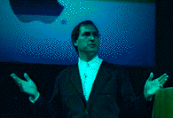
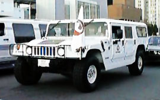

Table of Contents
- Letter from the Editor
- Macworld Expo SF 1997
Letter from the Editor
From now on, there will no longer be printed versions of the ASACMUG newsletter. We're going 100% electronic using the Web as our primary means to communicate with our members across the world.
This is a short newsletter, primarily consisting of first-hand thoughts gathered during the San Francisco MacWorld Expo, January 7-10, 1997.
Alex
Morando
Newsletter Editor
Episode IV - A New Hope
In some respects, this expo represents the last, best chance for Apple to recover from the press harassment and negative publicity heaped upon it during all of 1996, exacerbated by any effective response on Apple's part and terrible marketing. Exceeding expectations, attendance at the expo increased to over 80,000, up 10% from the previous year. The mood, despite the recently-announced $120 million loss for Apple's first quarter, was also more festive than the last expo.
The December 20th announcement of the Apple/NeXT merger provides the foundation upon which Apple will base its new operating system, codenamed Rhapsody. Thousands of attendees (at least those with the correct pink or yellow badges) saw CEO Gil Amelio in a marathon three-hour presentation of old and new technologies. The show was rambling, without any overriding theme, featuring celebrities Peter Gabriel, Jeff Goldblum, and others (although many thought that Frank Casanova gave the best demo). At the end, it was left to former CEO Steve Jobs to articulate Apple's strategy:

The mission of the company is to provide its customers, in concert with its developers, compelling solutions only available from Apple.
He highlighted this by comparing the ability of DOS to build a one-story shack, the MacOS to build a 5-story house, and Windows NT to build a 7-story building. Under the OpenSTEP environment, a 20-story building is possible. This kind of thinking underlines the growing complexity of today's software; OpenSTEP promises the ability of "two people in a garage" to build applications that today are done by hundreds of programmers. He then did a short demo of NeXT's development environment (called the classic OpenSTEP demo by someone who knows). At the end, both Jobs and Apple co-founder Steve Wozniak were presented with the limited-edition 20th anniversary Macintosh.
As I browsed the show floor talking to other attendees and exhibitors, I felt both pessimism and hope. Pessimism because the self-imposed deadline of one year to deliver Rhapsody is very aggressive. Apple must accomplish the following, any one of which is already a difficult task:
- Make OpenSTEP run on PowerPC
- Merge MacOS services with OpenSTEP (eg. QTML, Open Transport, OpenDoc)
- Add symmetric multiprocessing
- Provide some compatibility with MacOS 7.X
- Support other Mac clones and the PPCP
- Convince developers to move to OpenSTEP
- Continue to develop MacOS 7.X
However, I have seen what OpenSTEP can do in providing the best development environment on any platform, the advanced OS features underlying a microkernel like Mach, and seeing a few NeXT applications (running on a Pentium no less!). In addition, there are a few things Apple has in its favor:
- MacOS services (QTML, GX, Open Transport, OpenDoc)
- MAE emulator technology
- A brilliant group of OS engineers led by Avadis Tevanian
- Mac and NeXT developers who want to create that
20-story building
and last, but not least - - Millions of customers who want something better than what Wintel offers
They've got a tough year ahead of them, but as Gil Amelio said last year - "This is Apple, expect the impossible."
Reports
As in previous years, I spent time roaming both the huge South Hall and the smaller North Hall, often stopping at the UGWUMP to rest, chat, and read my email. This year, to illustrate the co-dependence of Apple and its developers, the Apple Pavilion and Developer Central were next to each other. I spent some time in both - Developer Central was very good, although they should have provided more seminars and technical sessions for those looking for more detailed answers.
| The Apple booth had nice demo theaters on OpenDoc, Internet, and Education. The center of the booth was taken up by eXponential Technology showing their new X704 PowerPC chip, running at 400 MHz, although 533 MHz versions will be available soon, with a projected speed of 1000 MHz by the end of the year. Despite the slow motherboard (50 MHz) and 68K emulated disk access, this modified PowerMac ran circles around the Pentium Pro. |
|
|
What MMX really means |
FMRadio (LaCie, $50) - this is a little ADB doohickey that functions as a software-controlled FM radio. It can play through the internal speakers or using external speakers.
BeeHive ADB I/O - a geek-lovers delight. A multi-function input/output box to connect your Mac to the real world. This device enables your Mac to control devices such as alarms and appliances, and receive readings from switches and thermostats. A few useful applications can be found here.
BeHere QTVR camera - for $15,000, you can create QuickTime VR panoramas in one shot, without having to take and stitch multiple pictures.
Prime Target (MacSoft, $25) - Even though Bungie has finished the Marathon Trilogy, the Marathon game engine has been licensed to other companies. In Prime Target, you are a security consultant sent to clean up corruption in our nation's capital. Your tools are not reforms or even like-minded politicians, but your trusty Beretta.
Power Computing - with
absolutely no vested interest in Wintel, the
self-appointed soldiers of the Macintosh Way adorned
their booth with a crashed "Redmond express" plane,
drove Humvees around Moscone Center crushing PCs under
their wheels, and gave out posters declaring war on
Bill Gates' tyranny. Apple would do very well if it
had even a little bit of chutzpah shown by this
company. They deserve our support for understanding
what it takes to win.
Visual Cafe - After losing the Mac development leadership to Metrowerks, Symantec is focusing on Java tools. They are doing a good job keeping their Mac and Windows versions equivalent. I understand why large companies like Symantec pursue a dual-platform strategy, but as a Mac advocate, I feel bound to support companies that are Mac-first or give every indication of supporting the Mac (such as Adobe). Nevertheless, Visual Cafe promises to greatly speedup Java development, with constant links between both visual and textual environments.
UMAX - The clone maker had dancing girls performing every hour. Some of us were repeat visitors. Umm, how much is that J700 in the window?
Be - The Be
booth was the second most popular booth (after Power
Computing's). The BeOS runs on three different platforms
(BeBox, PowerMacintosh, Power Computing). New BeOS
applications were being shown, along with VirtualMac, a
MacOS emulator with System 7.X compatibility, even with
problematic applications like Word 6. Some people fear a
"civil war" splitting Mac users' loyalties between the BeOS
and Rhapsody, especially when the mass media had all but
considered the Apple purchase of Be a done deal.
BeOS has appeal to many of Apple's core customers in
multimedia, while OpenSTEP has appeal to business and other
developers. Still, this is a good thing - the enthusiasm
and reasons for the Macintosh and what it represents should
not be dependent on Apple's fortunes.
Myrmidion - This Chooser extension generates Web pages from any application that can print.
Component 100 - This consortium of OpenDoc developers provides solutions to prospective users, and provides marketing leverage and visibility not usually available to small developers. The demo of an OpenDoc database accessing data from Germany was quite convincing. I had bought the WAV word processor before the expo and the demos showed me that I didn't just buy a word processor, but a set of building blocks to do the work of the other 20 applications I'm currently using. With OpenDoc (finally) taking off, Apple is well-advised to make this work with Rhapsody from day one.
Motorola - The Motorola booth was too slick. You could win great stuff, including a backpack, but you had to listen to an insipid presentation that tells absolutely nothing. Yes, the StarMax computers are good, and Motorola is shipping tens of thousands of units a month. However, they need a good education on what expo attendees expect. I was unable to get a single question answered by their booth representatives.
Mathsoft - I've had a love/hate relationship with Mathcad. They had a small booth in the Education Pavilion, and I was unable to convey my concerns to their product manager at the time. However, I was later able to talk in detail with another product manager about their recent Mac version. I was told that their Mac development team consisted of one person. For a company that professes a committment to developing Mac software, this is not the way to do it. At least, they are selling more than they expected, so I hope that they will have enough incentive to fix their Mathcad bugs.
Off the Show Floor
Mactivity/Web - The Mactivity fair was held the night before the Expo (Monday) at the Catehedral Hill Hotel on Van Ness and featured Internet and Web-specific vendors. The vendor fair ended with infamous columnist Andy Ihnatko hawking his new book which is a humorous look at new words created by the Internet revolution. Sorry, it's not as good as the jargon file, but provides a few laughs. At the end, Andy threw out some PEZ dispensers, then promptly shoved a 12-inch steel pin through his forearm - he definitely feels Apple's pain.
BMUG/Microsoft - I went to this party (guess who paid) to hear Jef Raskin speak. After seeing the line at the Cartoon Museum, our ASACMUG contingent decided that was better to stay outside if we wanted to breathe.
APS - Another awesome hospitality suite hosted by the leading Mac peripherals (and now clone) vendor. They were giving out PowerBalls (can I have an 8-ball?) and showing their new products, which included a new enclosure, the ICCE thermal control system, and new Mac clones, including a 240-MHz black multimedia monster. It sports the "entertainment center" look popularized by PC companies like Toshiba and Acer. Our user group voiced some reservations about the Motorola design they are using, but again, I buy my peripherals from them all the time.
UGC breakfasts - This year, breakfasts were sponsored by the UGC, Adobe, and Symantec. Two members of ASACMUG were there, and one was on a lucky streak winning free software. Unfortunately, neither one won the Motorola StarMax grand prize (nor that week's lottery). At least the food was good.
Ocean Beach - After spending three straight days on the show floor, bombarded by multimedia presentations, marketing and sales people, technical presentations, and bags of product literature, I took the MUNI to get away for a few hours. The recent New Year's flooding from the Sacramento Delta caused the surf to foam, but the air was refreshing, the sun was shining, the coffee was good, and the people I met weren't into computers. For a while, it felt like a real vacation.
{kind=link}
Carmel Valley Road - At the Rio Road gas station in Carmel, I was told that Highway 1 was closed south of Big Sur. I could have taken State Route 68 to quickly get to US 101, but this detour (Monterey County G16) provided a relaxing trip through some beautiful country roads, including close-up views of the San Andreas Fault. Here are some pictures from that road trip.
* Being a Star Wars fan, I couldn't help but see this as the fourth major phase of Apple Computer history. Each milestone was led by someone who is still involved in the Macintosh industry today.
- Episode 1 - The birth of Macintosh, Steve Jobs
- Episode 2 - The expandable/color Macintosh, Jean-Louis Gasseé
- Episode 3 - The switch to PowerPC, John Sculley
- Episode 4 - A modern OS, Gil Amelio
Thanks for reading this far. See you at work, and hopefully, at next year's MacWorld Expo! (January 6-9, 1998)